ТИПОГРАФИКА / ИССЛЕДОВАНИЕ 02Пластика логотипа. Пространство космоса.
Ясность профессионального продукта.
Отбор по форме букв, а не по «космическому» названию шрифта. Проверены файлы 11 новых гарнитур. Три финалиста ниже; главный кандидат — Vetrino. Все оценки характера — дизайнерская интерпретация в контексте ElevenHouse.
Меньше рутины —
больше времени на клиентов
Всё начинается с вас
Данные, история и заметки о клиентах — в одном пространстве вашей практики.
Скошенные окончания, раскрытые округлые формы и лёгкий контраст связывают заголовки с пластикой e и h в логотипе. Из трёх вариантов лучше всего соединяет спокойствие продукта и необычный характер айдентики.
У автора помечен как beta. Использовать для крупных заголовков; перед внедрением проверить переносы и межбуквенные пары. Не уплотнять трекинг так сильно, как у текущего Manrope.
Русский набор, размеры и условия использования
абвгдеёжзийклмнопрстуфхцчшщъыьэюя
0123456789 · «Клиенты» — всё под рукой
Автор разрешает бесплатное коммерческое использование и просит указать его со ссылкой на Behance. Источник ↗
Daniyar Shape. Наличие всех 66 русских букв проверено в файле через CoreText без шрифтовой подстановки.
Меньше рутины —
больше времени на клиентов
Всё начинается с вас
Данные, история и заметки о клиентах — в одном пространстве вашей практики.
Тонкие соединения и вытянутые плавные контуры поддерживают ощущение пространства и сосредоточенности. Даёт более камерный, редакционный образ практики астролога; красиво контрастирует с простыми золотыми иконками.
Очень тонкие штрихи: на небольшом экране и сложном фоне читаемость снижается. Рассматривать прежде всего для коротких крупных заголовков, а не названий карточек.
Русский набор, размеры и условия использования
абвгдеёжзийклмнопрстуфхцчшщъыьэюя
0123456789 · «Клиенты» — всё под рукой
HSE публикует для коммерческого и личного использования. Creative Commons с указанием автора и Школы дизайна. Источник ↗
Дарья Казакова / HSE. Наличие всех 66 русских букв проверено в файле через CoreText без шрифтовой подстановки.
Меньше рутины —
больше времени на клиентов
Всё начинается с вас
Данные, история и заметки о клиентах — в одном пространстве вашей практики.
Прямые стойки сочетаются с живыми рукописными поворотами. Эта пластика перекликается с логотипом, а неформальный рисунок помогает говорить о контакте астролога с клиентом и сообществе.
Рукописный оттенок заметно смягчает бренд. Если нужен более строгий и собранный характер, Vetrino точнее. У нового студенческого проекта следует отдельно проверить набор во всех нужных размерах.
Русский набор, размеры и условия использования
абвгдеёжзийклмнопрстуфхцчшщъыьэюя
0123456789 · «Клиенты» — всё под рукой
Опубликован в каталоге HSE для коммерческого и личного использования. В образцах сохранена атрибуция по правилам каталога. Источник ↗
Анна Деризюкова / HSE. Наличие всех 66 русских букв проверено в файле через CoreText без шрифтовой подстановки.
Что показал отсев
- Nyght Serif — исключён: в проверенном файле нет Ёё, Ыы, Ээ.
- Anticva — выразительные прописные; оставлен для коротких подписей и айдентики, не как основной шрифт заголовков.
- DRUZHOK и Dark Deco — сложнее читать длинные продуктовые фразы; сильнее меняют характер бренда.
- Racama, Architexture и Gibb Sans — читаемы, но дают слишком небольшое отличие от знакомого геометрического гротеска.
- MM2 — тяжёлый рисунок спорит с тонкостью и пространством текущей айдентики.
Предлагаемая система: Vetrino для крупных заголовков + Manrope для текста и интерфейса. Felidae — альтернативное направление для более камерной подачи. Одновременно все три гарнитуры на сайте не нужны.